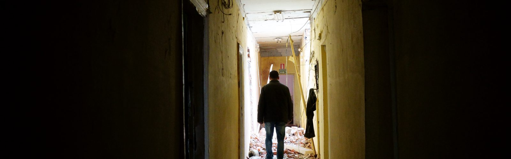
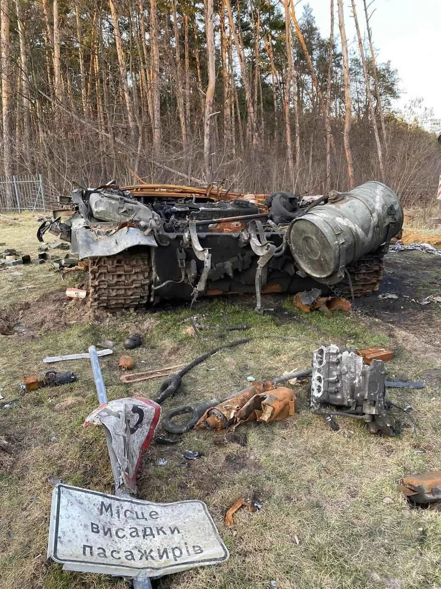
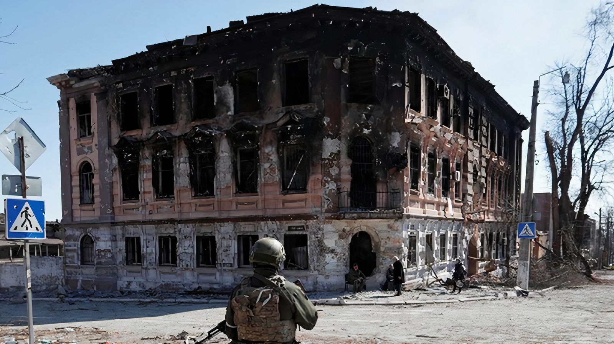
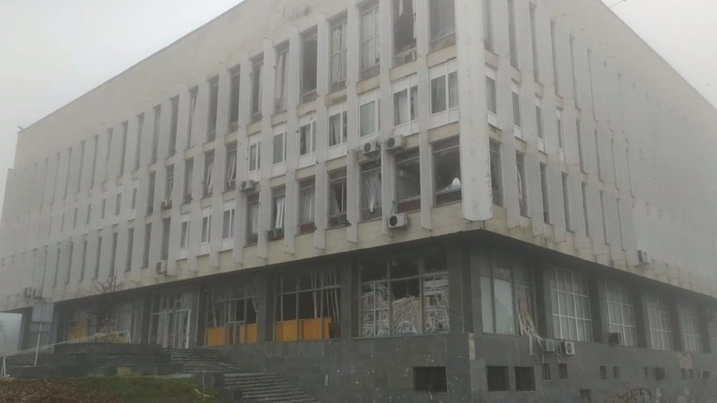

Science at risk in stories: Svitlana Galata's blog
30.10.23
Svitlana Galata is a journalist at the “Svit” newspaper and a communication manager of the National Research Foundation of Ukraine. She writes about scientists, their successes and failures, solidarity and mutual help, and difficult decisions in times of war, grant-based funding, international support, and advocacy for the needs of the scientific society. In the Science at Risk project, she is a member of the Communication group and researches the “Advocacy of Science at Risk” subject. For this, Svitlana and her teammates interviewed Ukrainian scientists. Read the stories of their experiences in times of war and their advice for the world's scientific society in this blog.
Our team includes brilliant scientists, media researchers, researchers of digital democracy and digital government, international relations in Central-Eastern Europe, and material scientists. Some come from Kharkiv and had to leave the city during the mass shellings in March 2022. Shards of Russian shells pierced the apartment of one of the scientists. It’s not from the media accounts that our team knows about science at risk.
In the group, I’ve been coordinating the work on expert interviews with Ukrainian scientists, science mediators, entrepreneurs, and representatives of the authorities. I recorded the first interviews myself, and then, thanks to the suggestion of Bohdan Hrushetsky, we started practicing collective interviews. At first, I was afraid it would bring chaos into the orderly plan of the conversations. But then I saw again that one brain is good, but teamwork is much better.
Our work started with the analysis of which problem in communication during the war was the most important – and, therefore, what to do so that the scientists know how to act in moments of danger: how to save family and friends, evacuate equipment and scientific collections, and whom to call for help.
To know what kinds of situations the scientists faced, how they acted during danger, which stakeholders they tried to involve in solving the problems, and who helped them, we have recorded interviews with researchers and professors from Kharkiv, Chernihiv, Mariupol, Kherson, Sumy, and Kyiv. Their universities and scientific institutions found themselves under the enemy fire or under occupation.
Each of these stories can become a separate book, a movie script, or a base for recommendations on how to prepare for danger and what to do in critical situations.
Following are short examples
***
During the first days of the full-scale invasion, a column of Russian tanks entered the Demydiv village, thirty kilometers north of Kyiv. Seventy-year-old Tetiana Skarboviychuk, an employee of the paleomagnetic laboratory of the NASU Subbotin Institute of Geophysics, was standing on the porch and counting the heavy military equipment.
Together with her colleagues, she waited until the first columns passed and then started to move the heavy equipment from the laboratory and the NASU Center of Shared Equipment Usage to the basement. In the dark closet, the instruments were masked with rubbish and dirty rags. This stratagem worked: Russian soldiers didn’t notice the carefully hidden treasure.

***
In February-March 2022, the enemy blocked the roads to the city of Sumy, and the store shelves quickly became empty. Students and postgraduates from China, medical students from India, and youth from other countries remained in the city. The professors of the Sumy National Agrarian University reached out to the agrarians – alumni of the university – and they brought meat, cereals, pasta, oil, and eggs. Yuri Danko, the vice-rector, told us that students and professors together gutted the chickens and cooked stew, also for the military who were defending the city.
***
On the second of March in Mariupol, the phone network, electricity, and water supply stopped. To find their colleagues, the professors of the Pryasov State Technical University visited basements and called out: “Is the such-and-such here?”. Olena Khadzhynova, the dean of the Economics Faculty (currently the acting rector of the university), heard the announcement about the “green corridor”, took her family, invited strangers into her car, and left, taking the risk. On the way, she saw that there was no green corridor. In the city of Dnipro, Olena created a group initiative to move the university and began to gather people. She was texting in all messengers: “We are in Dnipro, contact us, tell us if you’re alive. If you have nowhere to go, come – we are waiting and ready to help.”

***
During the first days of the full-scale invasion, Russian forces advanced from Crimea to the Antonivsky Bridge in Kherson unimpeded. Oksana Shestakova, an employee of the Oles Honchar Kherson Regional Universal Scientific Library who lives near the bridge, witnessed Russian fighter jets shell the defenders of the city (Russian tanks were stopped by the Territorial Defence Forces, but not for long). Oksana remembered how the library employees refused to collaborate with the enemy and how it was possible to survive under the occupation. The librarian has also told us an incredible story: during their retreat from the city, Russians tried to take (steal) the pre-WWI books from the rare and valuable editions department. It’s unknown who was ordered to carry the books by the back stairs, but the daring anonymous brought and hid part of the crates in the restoration room, covering them with old coats. A couple of dozens of invaluable books were saved. “Unfortunately, there was and is no evacuation plan for the libraries,” – Oksana says. “You can’t evacuate millions of books in your car. We need to advocate for our interests.”

After these interviews, we decided that our research and White Book would be dedicated to the advocacy of science at risk. By advocacy, we mean a complex of actions to influence the authorities and develop and implement state policies to protect the interests of scientists.
In the book, we give our recommendations: how to build an advocacy campaign, start to collaborate with the media and engage the support of civil society. We also advise the scientists to be proactive, talk about their needs, ideas, and work results, and, if there’s a problem, tell about it to the public. This is what our experts advise. For instance, Maryna Synhaivska, a deputy CEO of the Ukrainian National Information Agency Ukrinform, says:
More on the advocacy of science at risk will be available in the White Book. We are finishing our work on the book, which is to be published in November 2023.
We are certain that the unique Ukrainian experience will be important for scientists abroad as well. One of our questions was: “What would you advise your colleagues from abroad on how to prepare and to act in a dangerous situation?”
Here is some advice from our experts
Olena Khadzhynova, Mariupol: “I’m convinced that every institution should have an “emergency backpack” packed in advance. There should be created an automatized management system, and all the documents (including personnel records of employees) should be digitized and kept in cloud storage. And the most important is to evacuate people immediately in an extreme situation. A university rector (or a manager of a scientific institution) has to make an unpopular decision: pack your things, we are relocating.”
Oksana Shestakova, Kherson: “It’s important not to lose common sense during a crisis. For example, it’s important to understand which streets may be flooded, and where to move if you live on the lower level. And I would advise my colleagues from other libraries to develop a plan of action for extreme situations in advance.”
Serhiy Layevsky, Chernihiv: “You can’t be prepared for what we (Tarnovsky Chernihiv Regional Historical Museum) and other museums have faced. Usually, the events unfold too rapidly. You should organize training to practice actions for the rescue of the collections with different numbers of participants.”
Anton Senenko, Kyiv: “There should always be a plan for evacuation of people. And only then, if there is time and possibility, all the rest (collections, equipment) should be evacuated. In March 2022, I and my comrade were evacuating the art gallery from Irpin. We were moving out both paintings and animals. But it always was in the second place, after people. The only value is life. Everything else can be renewed.”